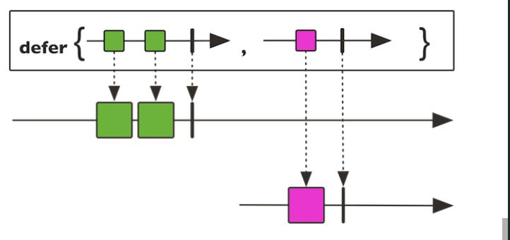
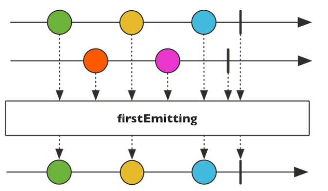
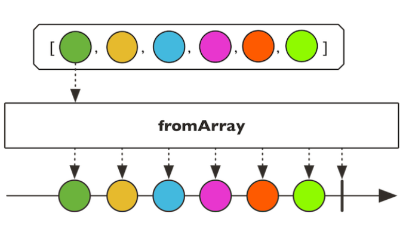
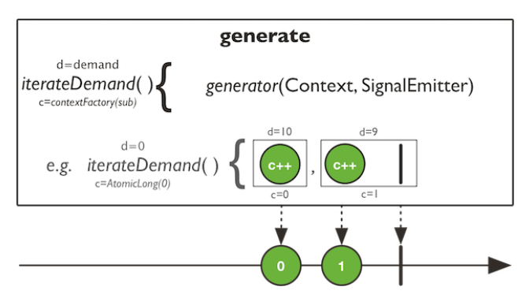
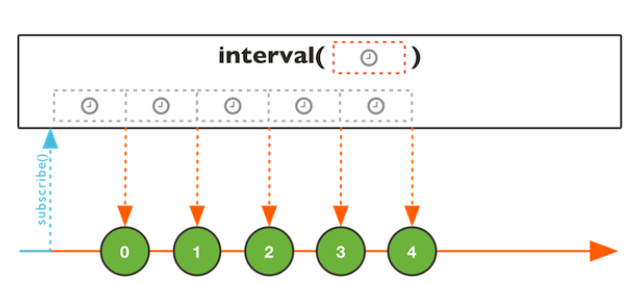

Reactor
Reactor
reactive 是一种观察者模式的扩展
观察者模式
指多个对象间存在一对多的依赖关系，当一个对象的状态发生改变时，所有依赖他的对象都得到通知并被自动更新。这种模式有时又称作为发布-订阅者模式
四种角色
- Publisher: 发布者
- Subscriber： 订阅者
- Subscription：订阅的控制器
- Processor：处理器
信号
- onSubscribe(): 订阅事件
- onNext(): 数据达到事件
- onComplete(): 订阅完成事件
- onError(): 订阅异常
- request(): 请求
- cancel（）：取消
Supplier Consumer Function
- Supplier 只出不进
- Consumer 只进不出
- Function 又进又出
常用方法
map
1 | |
这里的map就是对每一个元素进行加一操作，用于元素的转换
flatmap
flatmap也是对元素的转换但是不同的是，flatmap是将元素转换为流，再将流合并为一个大的流
1 | |
tips: flatmap和map 的区别
map就是一个function函数，输入一个输出一个，对于flatmap来说他接受的是一个输出为Publisher的function，也就是说他输入一个值，输出的是一个Publisher的function，所以map是一对一的关系，而flatmap是一对多或者多对多的关系，并且两者输出的也不一样。flatmap的应用场景，例如一个接口，入参是List
- map 接受Function <T，U>并返回Flux
- flatMap 接受Function <T，Publisher >并返回Flux
flatmap期望每个传来的T都有一个publisher。flatMap知道如何处理它：订阅他并在输出序列中传播其元素，所以，flatmap左后总会返回Flux
concat
public static
用于连接一个流。与combineLatest不同的是，concat都是在前一个流完成后再连接新的流。而combineLatest则是哪一个最先到哪个先处理。
参数：
- T 事件的类型
- source：一系列的发布者
- returns：一个新的Flux连接了所有得发布者，并传递给下游
concatDelayError
拥有与concat类似得方法，不同得是，遇到问题不提前拦截，而是等到最后发布得事件处理完成后
create,push
public static
通过FluxSink API，以同步或者异步的方式创建flux
1 | |
create(Consumer<? super FluxSink
push方法用处与使用方法与create几乎一致，他们唯一的区别就是CreateMode类型create为PUSH_PULL而push为PUSH_ONLY文档中也可以一个为多线程一个为单线程
backpressure(背压)概念的理解
这里，我摘自一位大神的话，背压是指在异步场景中，被观察者发送事件速度远快于观察者的处理速度的情况下，一种告诉上游的被观察者降低发送速度的策略。简而言之，背压是流速控制的一种策略。
为什么会有背压策略，如果没有背压策略，当被观察者发送的事件速度远快于观察者处理速度的时候，会造成观察者这边事件堆积，造成内存占用过高。
需要强调两点：
- 背压策略的前提是异步环境，也就是说，被观察者和观察者处于不同的线程环境中
- 背压并不是一个像flatmap一样可以在程序中直接使用的操作符，他只是一种控制事件流速的策略
- interval操作符本身不支持背压策略，他发送事件的速度是不受控制的，而range这类操作符是支持背压的，它发送事件的速度是可以控制的
defer
public static
这个方法提供了一种惰性策略，发布者不会一开始发布消息，知道订阅者创建实例

参数：
- T 发布者或者订阅者接收的类型
- supplier 一个发布者的供应者，当订阅的时候回调
- return: 一个惰性的Flux
empty
public static
创建一个不含任何事件的流.
error
public static
返回一个带着立即终止标识和错误信息的流
first
挑选出第一个发布者，由其提供事件。能有效的避免多个源的冲突。

from
从一个发布者创建一个flux流
1 | |
fromArray，fromIterable，fromStream
public static
通过一个数组，或者一个可迭代的元素，或者一个流，创建 flux 流.

generate
1 | |
1 | |

interval
public static Flux
间隔一定的事件，发送事件

本博客所有文章除特别声明外，均采用 CC BY-SA 4.0 协议 ，转载请注明出处！